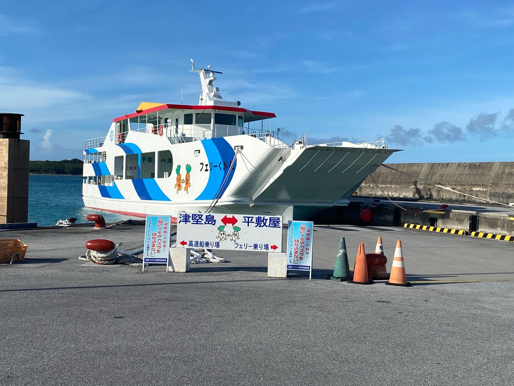

information
| 沖縄民宿UY | 〒903-2304 沖縄県うるま市屋慶名 |
|---|---|
| 所在地 | |
| 電話番号 | 03-0000-0000 |
周辺へのアクセス
キャロットアイランドと呼ばれる津堅島にもフェリーで20分

※今後しばらく仕様の変更が入るかもしれません。
- キャロットアイランドと呼ばれる津堅島にもフェリーで20分
- 屋慶名バス停から徒歩10分。那覇バスターミナルから乗り換えなし
- 平安座島、伊計島、浜比嘉島、宮城島までも車でスグです。海までも徒歩で行くことができます
地域のこと
お祭り・エイサー
うるま市屋慶名はエイサーが盛んな土地で、夏には屋慶名青年会が施設前で演舞を披露することもあります。また、屋慶名の大綱引きも目の前の道路で行われます。
是非、地元お祭りに参加してみませんか？
開催スケジュールはこちら